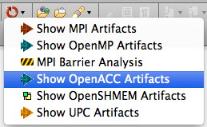
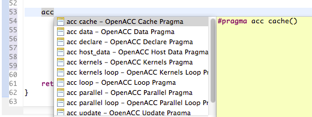
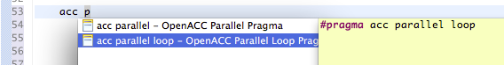
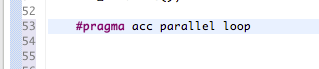
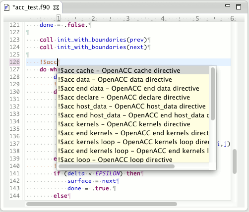

The Parallel Language Development Tools work on C, C++, and Fortran projects.
Select the "Show OpenACC Artifacts" menu item in the PLDT icon menu in the tool bar.

(Note: if it complains that a source file is not selected the first time, select it again and retry.)
The workbench with the selection and menu item is shown below:
To use code templates for OpenACC, type acc, then hit ctrl-space twice.
The first time you will see completions for OpenACC APIs (Content Assist described above).
The second time
you will see a choice of useful OpenACC programming items include #pragmas.
(Note: Fortran puts content assist and code templates together in the same place.)
The yellow popup on the right includes an example of the code that will be
added.

Use the cursor to navigate up and down and select the one you want,
or keep typing to cull the list to the ones that interest you.

Click or hit Enter to select it, and it is inserted into your file at that point.

Similarly, for Fortran programs:
